Design verdict and accepted limits · Revision, checks and reproduction · Historical green delivery
Approved visual target 06403744, source fnv1a64:50c88732a97c7d7b. Eleven actual production captures: eight retained from QA's 48-case strict gallery and three from the designer's live checks. Gray and black dark surfaces, blue actions, semantic colour where it conveys information. Light tokens remain unchanged.
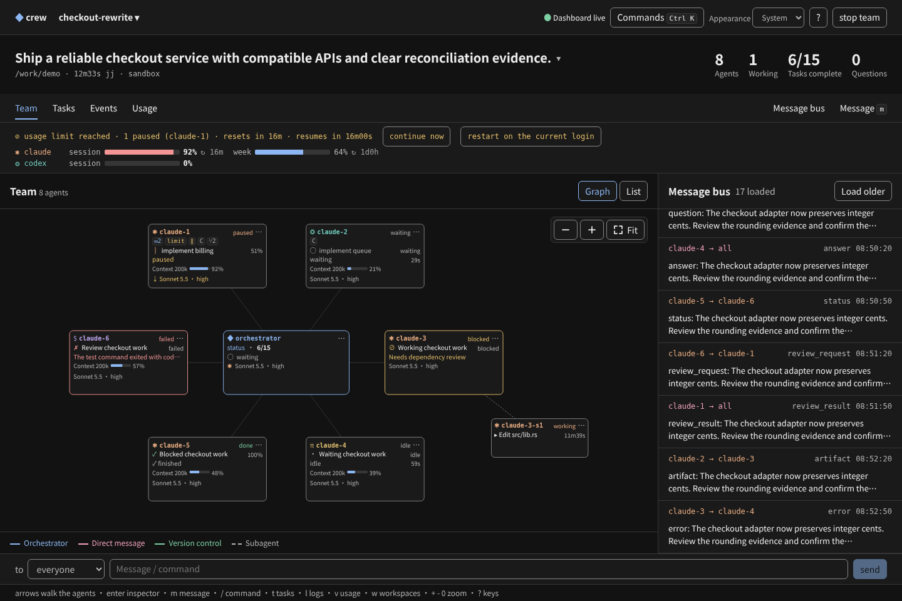
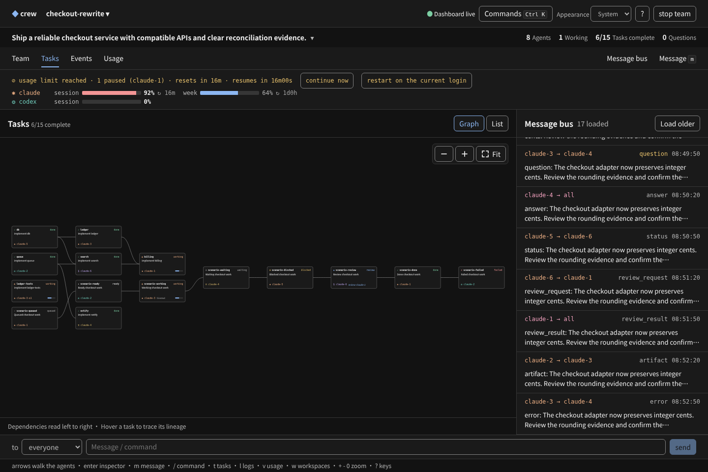
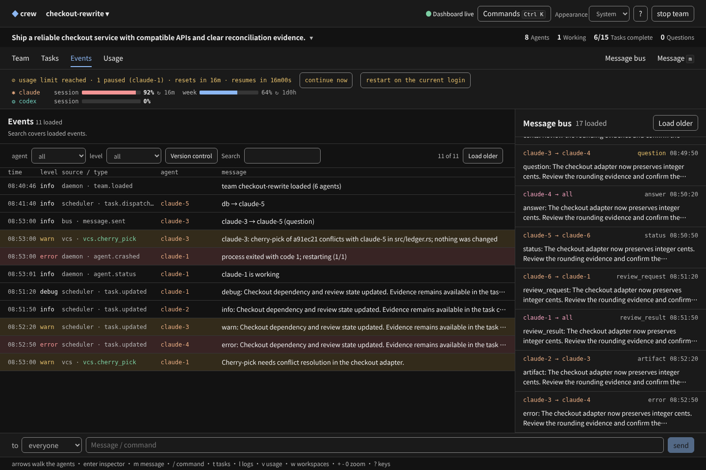
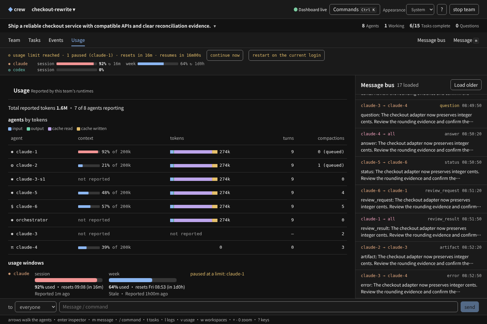
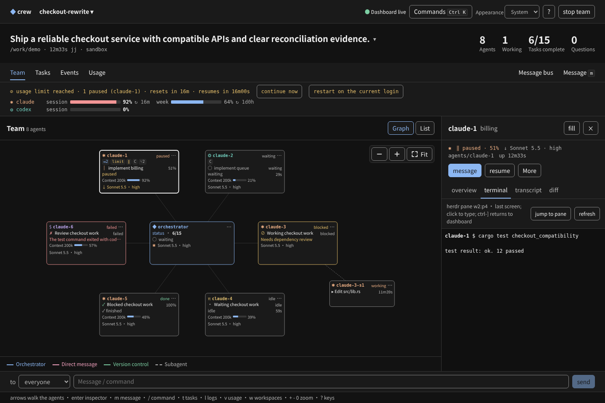
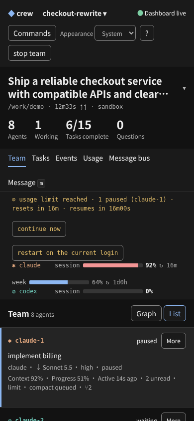
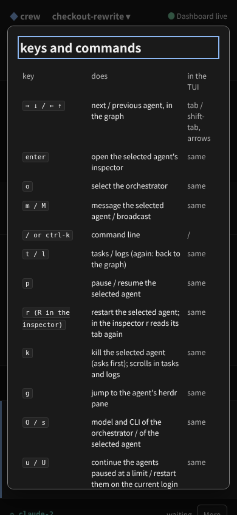
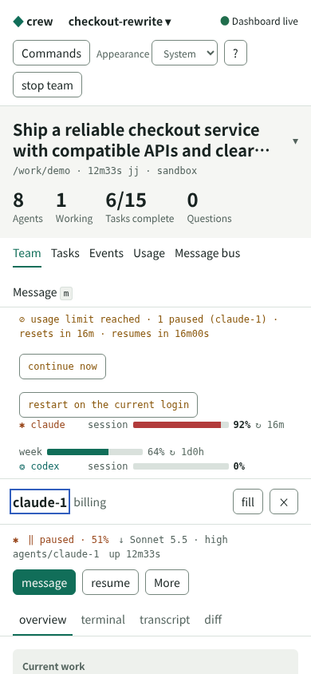
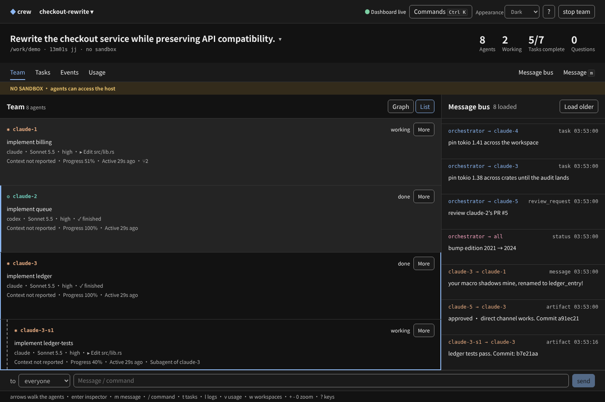
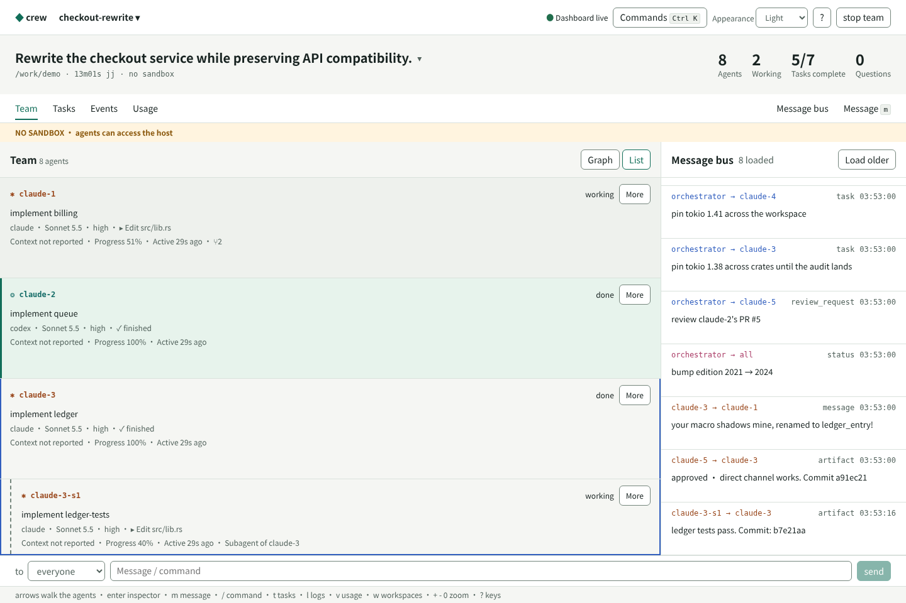
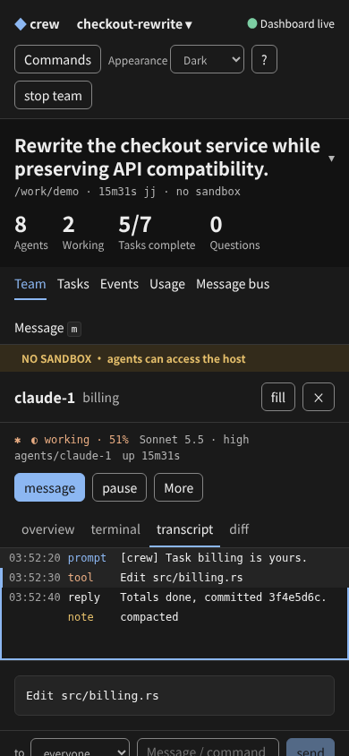
Before, source cf8956b55a22c53c: selected and hovered Team rows looked identical. Final, source 50c88732a97c7d7b: the selected row retains a blue marker. This comparison image is historical and is not counted among the eleven approved-target captures.